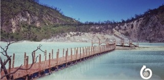
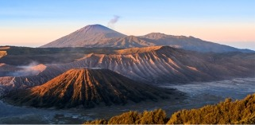

Artikel Baru

Kawah Putih
Kawah yang kita kenal ini sebenarnya adalah kawah Gunung Patuha, namun seiring waktu orang-orang mengenalnya dengan nama Kawah Putih. Tempat ini Selengkapnya...

Curug 7 Bidadari
Curug Tujuh Bidadari merupakan salah satu tempat wisata air terjun di kabupaten Semarang yang mungkin sangat cocok untuk dikunjungi sebagai alternatif untuk Selengkapnya...

Goa Jatijajar
Goa ini menjadi istimewa dan mengundang banyak wisatawan, bukan saja karena ukurannya yang luas, yakni memiliki panjang 250 meter Selengkapnya...

Gunung Bromo
Gunung Bromo merupakan salah satu tujuan wisata di Jawa Timur. Tempat wisata alam ini terletak di Taman Nasional Bromo Tengger Semeru Selengkapnya...